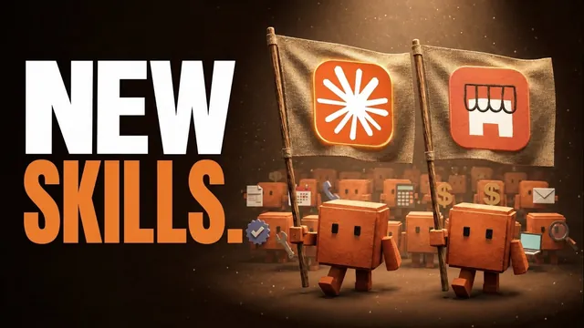

앤트로픽이 소상공인용 클로드를 내놨다 (스킬 44개)

원본 영상 보기 →
- 모든 스킬이 하나의 메모리를 공유해요
- "Record a skill"이 커스터마이징의 게임체인저입니다
- 스케줄드 태스크로 이어지면 완전 자동화가 돼요
한 줄 요약
Anthropic이 44개 스킬·35개 커넥터로 확장된 Claude "Small Business" 플러그인을 새로 내놨어요. 설치 방법부터 가장 쓸모 있는 10개 스킬, 커스터마이징 방법, 자동 실행(스케줄링)까지 실제 화면으로 보여 줍니다.
전체 내용 정리
소상공인용 플러그인이 44개 스킬로 확장됐어요
Anthropic이 기존에 있던 소상공인용 플러그인을 업데이트해 44개 스킬과 35개 커넥터를 담았습니다.
설치는 Claude 계정에서 Customize → Plugins → Discover로 들어가 "small business"를 검색하면 돼요. 아직 설치 전이면 Add 버튼이 뜹니다. 이 버튼을 누르면 CRM 오토파일럿, 스피드 투 리드, 급여 준비, SMB 온보딩, 리드 파인더 등 여러 스킬과 신규 커넥터들이 계정에 한 번에 활성화돼요.
스킬은 특정 작업을 어떻게 처리할지 미리 정해 둔 "재사용 가능한 지시문 세트"입니다. 예를 들어 인박스 매니저 스킬은 "이메일 전체를 가져온다 → 카테고리로 분류한다 → 각 메일이 요청하는 바를 추출한다 → 답장 초안을 쓴다"는 절차를 이미 갖고 있어요. 그래서 매번 새로 프롬프트를 짤 필요 없이 슬래시(/)와 스킬 이름만 입력하면 실행됩니다.
제일 먼저 돌려야 할 건 SMB Onboard예요
스킬을 처음 쓴다면 가장 먼저 /SMB onboard를 실행해야 합니다.
이 스킬은 아직 연결하지 않은 소프트웨어를 Claude와 연동시켜 줄 뿐 아니라, 사업에 대한 질문 몇 개를 던진 뒤 그 답을 바탕으로 "비즈니스 컨텍스트 파일"을 만들어 Claude 메모리에 저장해요. 브랜드 컬러 같은 세부 정보까지 포함됩니다.
이게 중요한 이유가 있어요. 이후 이 플러그인 안의 모든 다른 스킬이 이 메모리를 불러와 쓰기 때문에, 이후 생성되는 리포트나 대시보드가 자동으로 내 브랜드 스타일을 반영하게 됩니다.
인박스 매니저는 화면 녹화로 가르칠 수 있어요
인박스 매니저 스킬은 이메일함을 훑어 과거 답장 스타일로 "보이스 프로필"을 만들고, 메일을 카테고리별로 분류하고 필요한 곳엔 답장 초안을 쓴 뒤, 우선순위가 매겨진 대시보드로 정리해 보여 줍니다. 여기서도 저장된 비즈니스 컨텍스트를 그대로 반영하고요.
단순 텍스트 지시로도 커스터마이징이 가능해요. "스폰서십 메일은 답장 없이 읽음 처리만 해 줘" 같은 식으로 말하면 스킬 자체가 수정됩니다.
더 강력한 방법은 새로 나온 "Record a skill" 기능이에요. 화면 공유를 켜고 실제로 자기가 이메일을 정리하는 과정을 보여 주면서 음성으로 이유를 설명하면, Claude가 화면 동작과 음성 스크립트를 함께 보고 그 방식 그대로 스킬을 재구성해 줍니다.
이렇게 만들어진 스킬은 "매일 오전 9시에 실행해 줘"처럼 말만 하면 스케줄드 태스크로 등록돼서, 매일 아침 사람이 손대지 않아도 이메일 정리가 끝나 있게 돼요.
리포트와 회계는 Report Builder, Month-End Prep이 맡아요
리포트 계열 스킬 중에는 Monday Brief, Business Pulse 등도 있지만 가장 유용한 건 Report Builder입니다.
원하는 리포트 내용을 몇 가지 질문으로 확인하고, 연결된 커넥터와 메모리 속 비즈니스 컨텍스트를 바탕으로 지난 한 주간의 핵심 지표를 담은 리포트와 대시보드를 만들어 줘요. 이 리포트를 매주 자동 생성하는 스케줄드 태스크도 함께 만들어 주고요.
이후 "이 지표도 넣어 줘" 식으로 커스터마이징할 수 있고, 완성한 리포트를 Slack 채널로 자동 전송하는 단계를 추가하거나 팀과 라이브 아티팩트로 공유하도록 확장할 수도 있습니다.
Month-End Prep 스킬은 QuickBooks, Xero 같은 회계 소프트웨어와 연동해 손익계산서(P&L)를 엑셀과 1페이지 PDF로 만들어 줘요. 영상 속 진행자는 브라질 법인이라 QuickBooks·Xero를 쓸 수 없어서, 대신 이메일함에서 지출 내역을, Stripe에서 매출 내역을 끌어와 같은 형태의 결과물을 뽑아냈습니다.
영업·채용 자동화 스킬들
Proposal Builder는 누구를 위한 제안서인지 먼저 물은 뒤, 영업 담당자와 고객 간 마지막 미팅 녹취록과 비즈니스 컨텍스트만으로 꽤 완성도 있는 제안서를 바로 만들어냈어요. 기존에 쓰던 제안서 템플릿을 넣어 주고 "이 형식대로 업데이트해 줘"라고 하면, 이후 만들어지는 모든 제안서가 그 브랜드 스타일과 구조를 그대로 따르도록 스킬 자체가 바뀝니다.
Invoice Chase는 회계 소프트웨어나 결제 처리기를 훑어 연체된 인보이스에 대한 리마인드 메일 초안을 작성해 줘요. 커스터마이징 없이도 잘 작동합니다.
Speed to Lead는 웹폼·CRM·이메일 등 어디로 들어오든 신규 인바운드 문의를 얼마나 최근 범위까지 확인할지 물은 뒤(24시간 이내를 권장합니다), 들어온 리드를 정리한 대시보드와 답장 초안을 만들어 줘요. 24시간 또는 3시간 간격 등으로 자동 실행하도록 스케줄링할 수 있고, 답장을 자동으로 발송하도록까지 확장할 수 있습니다.
Hiring Screener는 지원자 목록을 순위가 매겨진 후보 리스트로 바꿔 줍니다. 지원자를 어디서 가져올지와 채용 기준을 알려 주면(영상에서는 200명이 넘는 지원자 CSV를 씁니다) 여러 서브 에이전트를 띄워 지원자별로 점수를 매겨요. 그리고 인터뷰 대상 23명, 보류 38명, 탈락 134명으로 나눈 대시보드와 각 지원자 요약을 제공합니다.
마케팅과 평판 관리
Marketing Monday는 매주 고객 반응, 경쟁사 동향, 이번 주 우선순위를 담은 마케팅·성장 브리핑 대시보드를 만들어 줘요. 커스터마이징 없이도 꽤 준수하고, 주간 스케줄드 태스크로 자동화할 수 있습니다.
Review & Reputation 스킬은 여러 플랫폼의 후기를 한데 모아 브랜드 평판을 파악해요. 영상에서는 YouTube, 이메일함, Google, Facebook 리뷰까지 모았습니다. 발생 가능한 문제들을 사례와 함께 카테고리로 묶어 주고, 필요한 리뷰·댓글에는 답장 초안까지 작성해 줘요. 역시 기본 설정만으로 잘 작동합니다.
핵심 인사이트
- 모든 스킬이 하나의 메모리를 공유해요: SMB Onboard로 한 번 저장한 비즈니스 컨텍스트를 이후 모든 스킬이 재사용합니다. 그래서 이 온보딩을 제일 먼저 끝내야 나머지 스킬의 결과물 품질이 실제로 달라져요.
- "Record a skill"이 커스터마이징의 게임체인저입니다: 텍스트로 규칙을 알려 주는 것보다, 화면 녹화에 음성 설명을 더해 실제 업무 방식을 보여 주면 Claude가 그 과정을 그대로 반영해요. 프롬프트를 잘 쓰는 것보다 "일하는 모습을 보여 주는 것"이 더 정확한 방법일 수 있습니다.
- 스케줄드 태스크로 이어지면 완전 자동화가 돼요: 대부분의 스킬은 "매일 9시에", "매주" 같은 한마디로 자동 반복 실행되도록 예약할 수 있습니다. 인박스 정리, 리포트 생성, 리드 응대, 평판 관리 같은 반복 업무를 사람이 매번 트리거하지 않아도 돼요.
오늘 당장 해볼 것
- Claude 계정의 Customize → Plugins → Discover에서 "small business"를 검색해 플러그인을 설치하고,
/SMB onboard부터 실행해 비즈니스 컨텍스트를 메모리에 저장해 보세요. 이게 먼저입니다. - 인박스 매니저나 리포트 빌더처럼 매일·매주 반복하는 업무 하나를 골라 커스터마이징 지시를 준 뒤 스케줄드 태스크로 등록해 보세요.
- 이미 쓰고 있는 제안서나 리포트 템플릿 파일이 있다면 그대로 붙여넣고 "이 형식대로 업데이트해 줘"라고 요청하세요. 앞으로 나오는 결과물이 자동으로 내 브랜드 스타일을 따르게 됩니다.